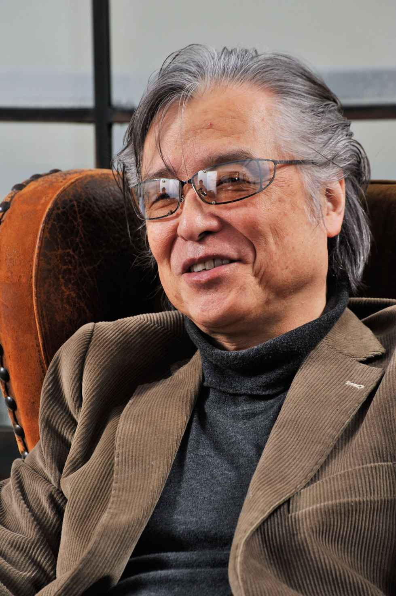
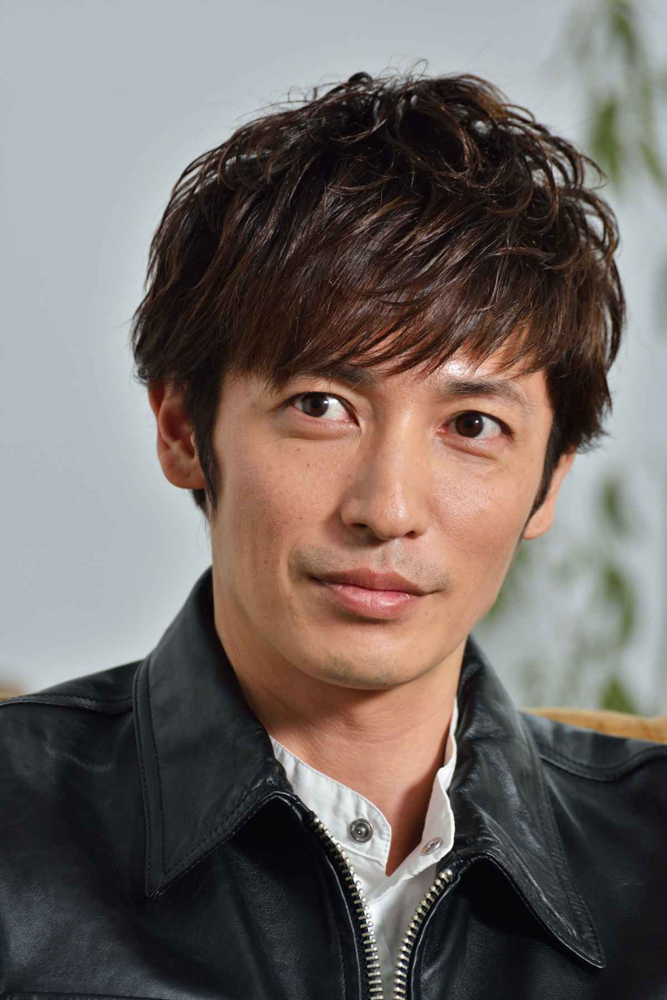
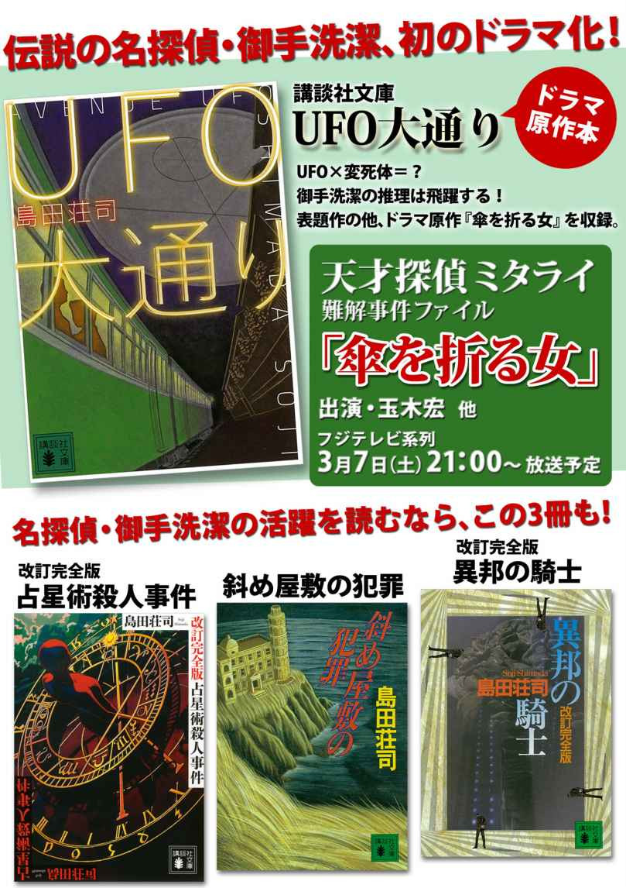
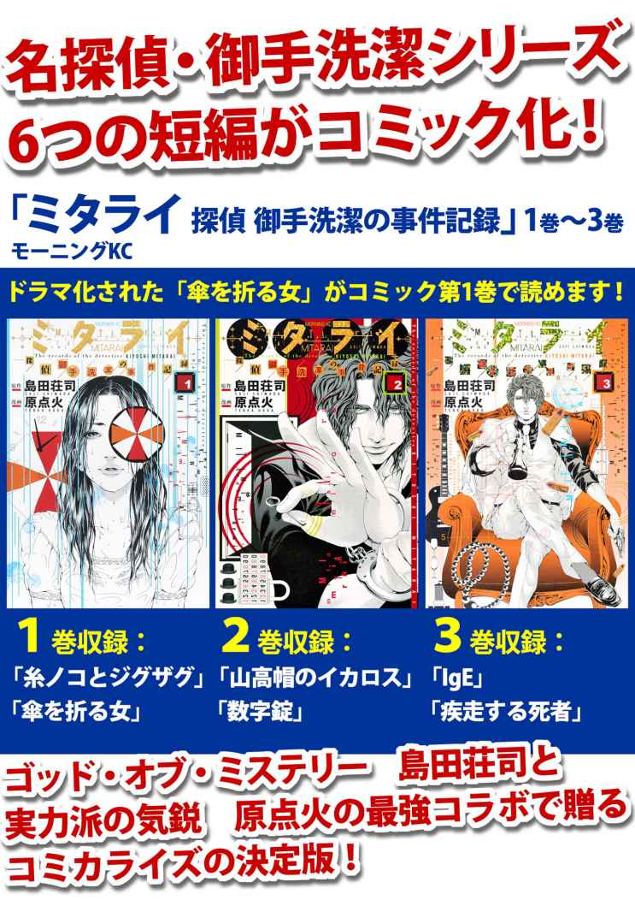

| 名探偵・御手洗潔、初のドラマ化記念！ 玉木宏 島田荘司スペシャル対談！ | |
| Unknown | |
| (2015) | |
島田荘司 （しまだ・そうじ）

１９４８年広島県生まれ。81 年『占星術殺人事件』でデビュー。以降『異邦の騎士』『斜め屋敷の犯罪』ほかの名探偵・御手洗潔シリーズ、『光る鶴』などの吉敷竹史刑事シリーズで人気を博す。近著に、『アルカトラズ幻想』『幻肢』、御手洗シリーズの最新作『星籠の海』などがある。
玉木宏 （たまき・ひろし）

１９８０年愛知県生まれ。98 年、俳優デビュー。01 年の映画『ウォーターボーイズ』で注目を浴び、その後『こころ』や『氷壁』、『のだめカンタービレ』『篤姫』などへの出演でブレイクした。最近の出演作には『オリエント急行殺人事件』『残念な夫。』がある。俳優以外に歌手活動もしており、ライブツアーも行っている。
ミステリー界の巨匠、島田荘司が
不朽の名作『占星術殺人事件』で
名探偵・御手洗潔を生み出してから 34 年。
映像化が何度か検討されるも、一度たりとも
果たされず、夢物語に終わると思われたが、
２０１５年春、ついにドラマとなって世に出た。
原作は「傘を折る女」（講談社文庫『ＵＦＯ大通り』所収作）
主演は今もっとも注目されている俳優の一人、玉木宏。
原作者の島田さんと玉木さんの特別対談をお届けしましょう。
素晴らしい出来だった
島田 『天才探偵ミタライ～難解事件ファイル「傘を折る女」』を観させていただきました。とても素晴らしい仕上がりで、感激しました。私が生み出した御手洗潔というキャラクターは映像化するのは難しいと思っていたのですが、玉木さんならできると確信していました。それが期待以上の出来で、原作者としてたいへんうれしく思います。あらためてお礼申し上げます。
玉木 いえ、こちらこそありがとうございました。初めて台本を読んだときは、原作の魅力をぎゅっと凝縮したような内容で面白いと思いつつ、同時に「これは非常にハードルが高い仕事だぞ」と感じましたね。たとえば堂本光一さんが演じる石岡（和己）君が、勝村政信さん演じる高橋義彦刑事に「いま機嫌が悪いんですよ」と耳打ちするシーンがありますよね。これは、高橋刑事は気づかないけど、長年の相棒である石岡君には御手洗の機嫌が悪いことは伝わっているということです。つまり、そのときに御手洗が発しているサインは、石岡君だけが察知することのできる非常に微妙なものということになるはずですが、「これはどうやって表現すればいいのだろう？」と、だいぶ戸惑いましたね。それがうまく観ている方に伝わればいいのですが。
島田 大丈夫ですよ。少なくとも私は、なんの違和感も覚えず、観ることができました。玉木さんだからこそ、そういうハードルを超えられたんだと思います。
小説としての御手洗潔シリーズは、一九八一年に始まりました。私のデビュー作でもある、『占星術殺人事件』がそれですね。そして、御手洗を主人公とした続編を何作か出版したところで、ドラマ化のオファーがありました。でも当時私が会ったテレビマンたちは、高度経済成長下という時代もあるのですが、御手洗の個性に肯定的とは到底思えませんでした。先ほど玉木さんが言われたように、御手洗は簡単には演じきれないキャラクターなのですが、時代の要請を入れて、上から目線で手早く仕事をされそうでした。
私が「これでは映像化を許諾できないな」と感じた理由は、その結果視聴率が悪かったり、出来がひどかったりしたら、もう御手洗が書けなくなる恐れがあったからです。「ドラマが大失敗しても、小説は別物だから気にしなくても」と言ってくれる人もいましたが、当時の編集者の中には「あんなドラマの主人公は、もう書いてもらわなくて結構」、と発想するような人が大勢いました。つまり世の中、テレビも活字もその種の威張りで埋まっていたんです。私の頭の中には、御手洗でなくては解決できそうもない事件のアイデアが、山のようにストックされていて、それをすっかり無にしてしまうリスクをおかすことはできませんでしたね。そうした事情で、以降に何度かお話があっても、御手洗シリーズの映像化はずっとお断りしてきたんです。
でも、時代は大きく変わりましたね。世の中の医者、弁護士、警察官、威張らなくなりました。よいことです。読者のみなさんも、以前は絶対に映像化しないで、の声が大半だったのですが、今はみんなが望んでいます。今回ドラマ化を提案してくれたフジテレビさん、制作を担当してくれた共同テレビさんも、原作者の気持ちを本当によく理解してくれたし、玉木さんをはじめとした役者の方々も、素晴らしい演技で応じてくれました。いろいろな思いを込めて、みなさんに感謝しています。
玉木 それほど大切にされてきたキャラクターを演じさせていただくとは、本当に光栄です。30 年前から映像化のお話があったのですね。その時、僕は１歳くらい......（笑）。
島田 それも驚きですね（笑）、私は玉木さんだからこそ（御手洗を演じることを）お願いしようと思ったんです。役者・玉木宏の存在を強烈に印象づけられたのは、ＮＨＫの大河ドラマ『篤 姫 』（二〇〇八年放送）の時です。玉木さんは坂本龍馬役でしたね。それで〝玉木龍馬〟が縁側か何かに腰掛けて履いていた革靴を脱ぐシーンがあったのですが、その時の頰から顎にかけてのシャープな面差しが日本人離れして、どこかアングロ・サクソン的な雰囲気を思わせ、ピリッと来たんです。御手洗をという以前に、「連中に向けて本格ミステリーを演じることができる役者が、日本にも出現した」と直感しました。
本格ミステリーという文芸は欧米を起源としていますから、根源的に英語ふうのロジカル志向がある。ジョークも気取りの物腰も英語流儀です。そのため、日本人の俳優では、どこか情緒的、階級依存的で雰囲気が違ってしまうし、ロジカルがゆえに説明調になって演じにくかろうと思っていたのですが、「この俳優ならあるいは......」と思い始めたんですよ。実際、御手洗の演技は簡単ではなかったでしょう？ 玉木さんは「窮屈に感じる」と表現されていましたね。
玉木 撮影の初期段階のことですね（笑）。御手洗が昂揚感を覚えているはずのシーンでもそれを外には出さず、内にため込むというか......。感情とそれに伴う芝居のバランスをとるのに苦労しまして、それを「窮屈」と表現しました。これまでやってきた役柄というのは、どちらかというと感情の起伏があって、それに合わせて言葉を発するというものが多かったのですが、先ほどもお話ししたように、御手洗は機嫌がいいのか悪いのかもパッと見ではわからない、感情が表に出ないキャラクターですよね。言い換えれば、「感情を出してはいけない」キャラクターです。それが今までに経験のない役柄だったこともあって、「窮屈」でしたね。でも、それでも役はだんだんと自分の内に浸透してきますから、そうなった後は演じやすかったですね。
堂本光一との冒頭シーン
島田 わかりますね。小説書きも同じです。最初のうちは書くのが嫌だけど、物語世界に埋没して、乗ってきたら楽になります。役が浸透するきっかけはあったんですか。
玉木 これぞというきっかけがあったわけではないのですが、いま振りかえってみると、一番難しいシーンを序盤に撮ってもらえたのがよかったのかもしれません。冒頭で長回しのシーンがあるんですが......。
島田 石岡がラジオで聞いた、御手洗の興味をひきそうな奇妙な話。そのことを御手洗に話して聞かせるシーンですね。
玉木 そうです。ドラマの冒頭というのは、長回しよりも、さまざまなシーンをテンポよく切り替えて、というやり方のほうが多い。テンポがいいほうが観る人を引き込むのに効果的であると考えられているからです。でも、監督が今回はあえてそれをしないと言いました。御手洗と石岡の二人の会話を通じて、御手洗の変人ぶり、二人の関係性、ドラマの世界観などを表現するには、あれだけ長いシーンが必要だ、と。そこでじっくりと演じているうちに、御手洗の個性や石岡君との距離感がつかめたような気がします。このシーンの収録は全体の撮影スケジュールの比較的序盤にあったんですね。これが大きかったです。もし収録が後半に予定されていたら、悩んでいる期間がもっと長くなったと思います。
島田 冒頭のシーンというと、私も脚本に少し関わっているので玉木さんには謝らなければいけない。長 台 詞 が多くて嫌だったでしょう。私はそれで窮屈に感じられたのかと思いました（笑）。ちょっと素人めいた質問になりますが、ああいう長い台詞というのは、完璧に覚えているものなのですか？
玉木 基本的に本番のときは覚えています。役者によってスタンスは違うのでしょうけど、僕は常に台本に触れていないと不安に感じるほうなので、ちょっと気になることがあるとこまめに開いて確認します。それを本番直前まで繰り返します。撮影スケジュールを見れば、いつ何のシーンを撮るのかは事前にわかるので、そのシーンに合わせた準備をするのですが、今回は最低三日前から準備しておかないと自分の中で御手洗という人物がなかなか整理できませんでした。ドラマによっては前日から準備に取り掛かっても大丈夫なこともありますが、その点でも今までにない役柄でしたね。
島田 物語中のミステリー現象というものは、偶然や必然の事象が、複雑に絡み合って成立し、出現します。その構造を、齟 齬 なく解いて語るとなると、どうしても台詞が長くなってしまうんですね。ナレーションが入る構成ではないので、御手洗の台詞のみで全体構造を解明しなくてはなりません。だって、解っているのは彼だけなんですから。御手洗潔は、謎解きはしなくてはいけないし、特に後半、解決を含めて物語のほぼすべてを一人で背負って引っ張っていかなくてはならない。皆の頭は五里霧中で、犯人に会えるのも御手洗だけ。物語全体がみるみる御手洗一人に依存していくんです。これは責任が重くて、たいへんだったろうなと思います。
玉木 でも、天才という役ですから、演じていて気持ちよかったです（笑）。
島田 天才というと、ちょうどコンピュータみたいに、機械に似て無感動人間、というふうに考えやすいです。でも天才というのは、言葉や数字、抽象的な映像など、膨大なイメージが天啓の雨として脳に降り注いでいて、渦を巻いている人間だと思うんです。その量が膨大で整理が追いつかず、翻弄されて態度が不安定になります。だから、じつは一般人よりむしろ喜怒哀楽が激しかったりもして、周囲が振り廻される、彼の興奮の理由が常人には解らないですから。
玉木 ああ、なるほど、やはりそうなのですね。僕も御手洗は、感情こそ表に出ないけれど、その内には熱い思いを秘めた、むしろ激情型の人物なのではないかと、漠然と感じていました。御手洗を創り上げた島田先生の「天才論」を伺うと、演出・脚本に携わった方々がひとつひとつのシーンを非常によく練り上げていたのだな、と改めて思いますね。
島田 本当にうまい演出でしたよ。私が最も印象に残った映像は、この「天才」を表現したシーンです。文字群が書棚から浮き出てきて、目を閉じた御手洗の周囲を、もの凄い勢いでぐるぐる回るＣＧ映像。天才の脳の中の嵐が、見事に表現された動画。あれこそは技術屋さんの真骨頂ともいうべきシーンですね。私は英米を一歩リードしたとさえ感じたし、性格が常人離れした御手洗でなくては、もしかしたらあの映像は馴染まなかったかもしれない。その意味で少し誇りを感じたし、玉木さんやスタッフに、もっとも感謝したシーンです。
玉木 制作スタッフは、これまでにもご一緒させていただいたことがある方たちだったのですが、冒頭で長回しのシーンを入れたことも含めて、既存の表現にとらわれないというか、常に新しいものを目指しているようなところがあります。そんなスタッフと一緒に仕事ができたことは幸せなことだったと思いますし、嬉しかったですね。
ぜひ期待したい
島田 もう一つ印象的だったのは、事件現場であるマンションに入っていくシーン。御手洗は静かに歩きながら、それでも周囲に視線を送り、細部までを観察している。台詞のない目だけの演技ですが、御手洗がさまざまな発見を続けていることが伝わります。これも玉木さんが、御手洗をよく理解したうえで、考えて演じられているなと感心しました。
玉木 ありがとうございます。周りの人は気づかないけど、御手洗は重要なポイントを絶対に見逃さない。そうした「しっかり観察している」ことを、微々たる表情の変化で表現する。それが御手洗を演じるうえでは大切だと思って、演じていました。
島田 それは活字ではできない、映像ならではの表現ですね。そんな印象的なシーンがいくつもありましたよ。数えきれないくらい（笑）。それから、キャスティングも素晴らしかった。玉木さんが主演を務められることは、私の要望でもあったので早くから知っていましたが、まさか堂本光一さんに石岡を演じていただけるとは。初めて聞いたときは、びっくりしました。当代一流のスターふたりの組み合わせは、奇跡的としか言いようがありません。言うなればドリームチームですね。それから、原作にはない役どころの、坂井真紀さんが素晴らしかった。
玉木 御手洗に「感情動物」って罵 られて泣いちゃう女刑事さんですね（笑）。
島田 あんなふうに言われたくらいで泣くかなぁ（笑）、なにも泣かなくても、と思いながらも思わず共感、深く感動しちゃったな。やはり役者さんっていうのはすごいですね。すぐ泣けるんですね。
玉木 あのような演技を演者がすると、その場面にいる共演者は「受け手」になります。そして、それによって演者だけでなく、受け手も同時に活 きる。あのシーンでは、そういったバランスが見事に成立しました。女刑事が泣き出し、感情を剝き出しにしたことによって、逆に御手洗の冷静さが際立ちましたのです。そういう意味で、坂井さんのお芝居で御手洗の人物像が成立した場面が数多くあったと思います。
島田 その通りだと思います。「静」と「動」でいうなら玉木さんの演技は「静」であり、坂井さんの演技は「動」。当然、坂井さんが目立つわけだけど、品があって嫌味がないので気にならない。メインキャストは玉木さん、堂本さん、坂井さん、勝村さんの四人ですが、坂井さんが動き廻ることでこの四人をよくまとめあげてくれた、という印象を受けました。
玉木 おっしゃる通りですね。
島田 同じメインキャストで、違う物語も観たいですね。ここは是非、シリーズ化をお願いしたいところ（笑）。
玉木 ネタバレになっちゃうので詳しくは申し上げませんが、ラストでは「ｔｏ ｂｅ ｃｏｎｔｉｎｕｅｄ」的な終わり方をしていましたから、続編の可能性はあるのかな、どうかな（笑）。
島田 ミステリードラマは、シリーズ化すると、軸になるアイデアがどうしても枯渇するというか、トリックが月並みになったり、内容が薄くなっていくことが多いのですが、ミタライに限っては、絶対にそれはないという自信があります。濃い原作がたくさんありますから。それに、まだまだ書き継いでいこうと思っています。玉木さんの御手洗も、堂本さんの石岡君も、まだまだ魅力に伸びしろがある。奇跡的なコラボレーションを実現したお二人が、今後もタッグを組んでいけば、はたしてどんな化学反応を起こしていくか、是非観とどけたいものです。
玉木 現場の空気もよかったですし、シリーズ化ができるとするならば、同じメンバーでやってみたい。やればやるほど、よくなっていきそうな気がします。個人的には、本当にそう思っています。
島田 横溝正史原作の映画『獄門島』（一九七七年公開・市川崑監督）ってあるでしょう。最近知ったのですが、海外でも根強い人気があるんだそうです。キャストを見ると当時脂が乗っていた役者さんたちがずらりと顔を揃えていて、あらためて驚きました。女優は美しく、役者たちは楽しんでいます。いいキャストでしっかりと作られたものは海外でも通用する、そう強く思いましたね。これまでドラマでも映画でも、ミステリーの映像表現はイギリスやハリウッドが先んじていたことは事実ですが、〝玉木御手洗〟なら、それに追いつき追い越すことができる、世界に通用するコンテンツに成長できるはずと、私は確信しています。御手洗潔を世に出してから34 年、それだけ映像化を待った甲斐があったというものです。
玉木 ありがとうございます。30 年以上も待たれたうえで白羽の矢を立ててくださったその重みを、改めて受け止めさせていただきました。もし御手洗を再び演じることができるならば、今回以上の作品を目指したいと思います。
島田 お願いします。がんばってください。玉木さんは未来を担う日本のスターの一人と、私は心の底から信じています。「現実に生きて動いている御手洗潔」に会わせてくれて、本当に感謝しています。ありがとうございました。
玉木 こちらこそありがとうございました。


企画／講談社文庫『ＩＮ☆ＰＯＣＫＥＴ』３月号
撮影／加藤雅和 構成／松木 淳
協力／フジテレビジョン
スタイリスト／上野健太郎【玉木宏担当】
ヘアメイク／渡部幸也（ＥＬＬＡ）【玉木宏担当】
御手洗潔シリーズ ドラマ化記念！ 島田荘司 玉木宏 特別対談！
二〇一五年三月一日発行
講談社文庫出版部
講談社 2015
発行者 鈴木 哲
発行所 株式会社講談社
東京都文京区音羽二‐一二‐二一
〒112-8001
◎本電子書籍は、購入者個人の閲覧の目的のためにのみ、ファイルの閲覧が許諾されています。私的利用の範囲をこえる行為は著作権法上、禁じられています。
15M0301E
01